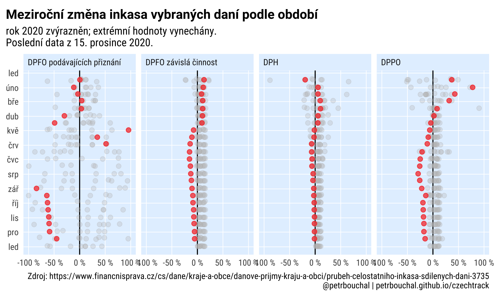

Česká rozpočtová data
Naposledy aktualizováno 30. října 2020 09:15 CET.
Kontakt: Petr Bouchal | twitter.com/petrbouchal | github.com/petrbouchal
Výběr daní
Časové řady
ggplot(all %>%
# filter(nazev == "DPH") %>%
filter(!str_detect(nazev, "hazard|technick|LOTER")) %>%
filter(TRUE),
aes(date_aligned, value/1e9, colour = rok, group = grp)) +
geom_line(aes(group = rok)) +
gghighlight::gghighlight(calculate_per_facet = T,
rok == 2020, use_group_by = T,
label_params = list(family = "rbtc", size = 2, label.size = 0)) +
facet_wrap(~ nazev) +
# theme_schola("scatter", multiplot = T, plot.caption.position = "plot",
# family = "sans",title_family = "sans") +
theme_schola("scatter", multiplot = T, plot.caption.position = "plot") +
scale_color_viridis_c(labels = scales::label_number(accuracy = 1, big.mark = "")) +
scale_x_date(labels = scales::label_date(format = "%m"), date_breaks = "months",
expand = expansion(c(0.05, 0))) +
labs(x = "den v roce", title = "Výběr daní podle dat Finanční správy",
subtitle = str_glue("Po měsících, mld. Kč. Rok 2020 zvýrazněn\nPoslední údaj z {latest}."),
caption = "Zdroj: https://www.financnisprava.cz/cs/dane/kraje-a-obce/danove-prijmy-kraju-a-obci/prubeh-celostatniho-inkasa-sdilenych-dani-3735\n @petrbouchal | petrbouchal.github.io/czechtrack")
Meziroční srovnání
library(scales)
# https://gist.github.com/mikmart/bfbf62839fbdd162b4b88e6d43e0c858
c_trans <- function(a, b, breaks = b$breaks, format = b$format) {
a <- scales::as.trans(a)
b <- scales::as.trans(b)
name <- paste(a$name, b$name, sep = "-")
trans <- function(x) a$trans(b$trans(x))
inv <- function(x) b$inverse(a$inverse(x))
scales::trans_new(name, trans, inv, breaks, format = format)
}
rev_date <- c_trans("reverse", "date")
all_diffs %>%
ggplot(aes(date_aligned, narust)) +
geom_hline(yintercept = 0) +
geom_point(alpha = .6, colour = "red", size = 2) +
coord_flip() +
scale_x_continuous(trans = rev_date, labels = label_date("%b"), n.breaks = 12) +
scale_y_continuous(limits = c(-1, 1), labels = label_percent(suffix = " %")) +
gghighlight::gghighlight(rok == 2020, unhighlighted_params = list(alpha = .3)) +
facet_wrap(~ nazev, nrow = 1) + theme_schola("scatter", multiplot = T) +
labs(title = "Meziroční změna inkasa vybraných daní podle období",
subtitle = str_glue("rok 2020 zvýrazněn; extrémní hodnoty vynechány.\nPoslední data z {latest}."),
caption = "Zdroj: https://www.financnisprava.cz/cs/dane/kraje-a-obce/danove-prijmy-kraju-a-obci/prubeh-celostatniho-inkasa-sdilenych-dani-3735\n @petrbouchal | petrbouchal.github.io/czechtrack")
Data
Příjmy a výdaje státního rozpočtu
V přípravě; data za 2020 zatím nejsou k dispozici.
Zdroje
Inkaso daní z Finanční správy
Aktualizuje se 2x měsíčně s poměrně malou latencí
Státní pokladna
Datové exporty na https://monitor.statnipokladna.cz/datovy-katalog/transakcni-data
Kód pro export dat v R: balík statnipokladna, dokumentace na https://petrbouchal.github.io/statnipokladna/.
Nejnovější dostupné datové exporty Monitoru státní pokladny
library(jsonlite)
library(httr)
library(dplyr)
library(tidyr)
td <- GET("https://monitor.statnipokladna.cz/api/transakcni-data?aktivni=true",
accept_json()) %>%
content(as = "text") %>%
fromJSON()
xx <- td %>%
unnest(dataExtracts, .name_repair = "universal")
xx %>%
group_by(titleCS) %>%
filter(!deleted, year == max(year)) %>%
filter(month == max(month)) %>%
select(titleCS, year, month, filenamePeriod)LS0tCnRpdGxlOiAixIxlc2vDoSByb3pwb8SNdG92w6EgZGF0YSIKb3V0cHV0OgogIGh0bWxfZG9jdW1lbnQ6CiAgICB0b2M6IGZhbHNlCi0tLQoKYGBge3Igc2V0dXAsIGVjaG8gPSBGLCBtZXNzYWdlPUYsIGluY2x1ZGU9RiwgZXZhbCA9IFR9ClN5cy5zZXRsb2NhbGUoIkxDX0FMTCIsICJjc19DWi5VVEYtOCIpCgpyYWdnX3BuZyA9IGZ1bmN0aW9uKC4uLiwgcmVzID0gMTkyKSB7CiAgcmFnZzo6YWdnX3BuZyguLi4sIHJlcyA9IHJlcywgdW5pdHMgPSAiaW4iKQp9Cgprbml0cjo6b3B0c19jaHVuayRzZXQoaW5jbHVkZSA9IEYsIHdhcm5pbmcgPSBGLCBtZXNzYWdlID0gRiwgCiAgICAgICAgICAgICAgICAgICAgICBmaWcuc2hvd3RleHQ9VFJVRSwgb3V0LndpZHRoID0gIjkwJSIsIGZpZy5yZXRpbmEgPSAzLAogICAgICAgICAgICAgICAgICAgICAgZmlnLmFzcCA9IDAuNikKCmxpYnJhcnkodGlkeXZlcnNlKQpsaWJyYXJ5KHJ2ZXN0KQpsaWJyYXJ5KGx1YnJpZGF0ZSkKbGlicmFyeShzaG93dGV4dCkKCmBgYAoKYGBge3IgbWV0YXRoaXN9CmxpYnJhcnkobWV0YXRoaXMpCgptZXRhKCkgJT4lCiAgbWV0YV9kZXNjcmlwdGlvbigKICAgICJBa3R1YWxpem92YW7DvSBwxZllaGxlZCB2w712b2plIHJvenBvxI10dSBhIHbDvWLEm3J1IGRhbsOtIgogICkgJT4lIAogIG1ldGFfbmFtZSgiZ2l0aHViLXJlcG8iID0gInBldHJib3VjaGFsL2N6ZWNodHJhY2siKSAlPiUgCiAgbWV0YV92aWV3cG9ydCgpICU+JSAKICBtZXRhX3NvY2lhbCgKICAgIHRpdGxlID0gIkN6ZWNoIFRyYWNrIiwKICAgIHVybCA9ICJodHRwczovL3BldHJib3VjaGFsLmdpdGh1Yi5pby9jemVjaHRyYWNrLyIsCiAgICBpbWFnZSA9ICJodHRwczovL3BldHJib3VjaGFsLmdpdGh1Yi5pby9jemVjaHRyYWNrL3R3aXR0ZXJfY2FyZF9sYXJnZS5wbmciLAogICAgaW1hZ2VfYWx0ID0gIk7DoWhsZWQgZ3JhZnUgdsO9YsSbcnUgZGFuw60gdiBtZXppcm/EjW7DrW0gc3Jvdm7DoW7DrSIsCiAgICBvZ190eXBlID0gIndlYnNpdGUiLAogICAgb2dfYXV0aG9yID0gYygiUGV0ciBCb3VjaGFsIiksCiAgICB0d2l0dGVyX2NhcmRfdHlwZSA9ICJzdW1tYXJ5X2xhcmdlX2ltYWdlIiwKICAgIHR3aXR0ZXJfY3JlYXRvciA9ICJAcGV0cmJvdWNoYWwiCiAgKQpgYGAKCgpOYXBvc2xlZHkgYWt0dWFsaXpvdsOhbm8gYHIgZm9ybWF0KGx1YnJpZGF0ZTo6bm93KHR6b25lID0gIkNFVCIpLCAiJWQuICVCICVZICVIOiVNICVaIilgLgoKS29udGFrdDogW1BldHIgQm91Y2hhbF0oaHR0cHM6Ly9wZXRyYm91Y2hhbC5naXRodWIuaW8pIHwgW3R3aXR0ZXIuY29tL3BldHJib3VjaGFsXShodHRwczovL3R3aXR0ZXIuY29tL3BldHJib3VjaGFsLykgfCBbZ2l0aHViLmNvbS9wZXRyYm91Y2hhbF0oaHR0cHM6Ly9naXRodWIuY29tL3BldHJib3VjaGFsLykKCmBgYHtyfQpzb3VyY2UoInNoYXJlZC5SIikKYGBgCgoKYGBge3IgZ2V0IGRhdGF9CmRhbl92eW5vc3kwIDwtIHJlYWRfaHRtbCgiaHR0cHM6Ly93d3cuZmluYW5jbmlzcHJhdmEuY3ovY3MvZGFuZS9rcmFqZS1hLW9iY2UvZGFub3ZlLXByaWpteS1rcmFqdS1hLW9iY2kvcHJ1YmVoLWNlbG9zdGF0bmloby1pbmthc2Etc2RpbGVueWNoLWRhbmktMzczNSIpICU+JSAKICBodG1sX3RhYmxlKGZpbGwgPSBULCBkZWMgPSAiLCIpCgpkYW5fdnlub3N5IDwtIGRhbl92eW5vc3kwW1syXV1bLDE6OF0gJT4lCiAgIyBmaWx0ZXIoc3RyX2RldGVjdCguWywxXSwgIjIwMTgiKSkgJT4lICMgaXMgdGhpcyB0YmwgZm9yIDIwMTg/IElmLCBub3QsIGNoYW5nZSBpbmRleCBhYm92ZQogIHNldF9uYW1lcyhkYW5fdnlub3N5MFtbMl1dWzIsMTo4XSkgJT4lIAogIHNsaWNlKDM6bigpKSAlPiUgCiAgcGl2b3RfbG9uZ2VyKC1EQVRVTSkgJT4lCiAgbXV0YXRlKHZhbHVlID0gc3RyX3JlbW92ZV9hbGwodmFsdWUsICIgIikgJT4lIAogICAgICAgICAgIHN0cl9yZXBsYWNlKCIsIiwgIi4iKSAlPiUgCiAgICAgICAgICAgYXMubnVtZXJpYyh2YWx1ZSksCiAgICAgICAgIG5hbWUgPSBzdHJfcmVwbGFjZV9hbGwobmFtZSwgIiBcbiAiLCAiICIpKQoKZGFuX3Z5bm9zeV9hbGwgPC0gYmluZF9yb3dzKGRhbl92eW5vc3kwKQoKbXVuZ2VfeWVhciA8LSBmdW5jdGlvbihkZikgewogIGRmZiA8LSBkZlssMTptaW4obmNvbChkZiksIDgpXQogIGRmZmYgPC0gc2V0X25hbWVzKGRmZiwgZGZmWzIsXSkKICBkZmZmICU+JSAKICAgIHNsaWNlKDM6bigpKSAlPiUgCiAgICBwaXZvdF9sb25nZXIoLURBVFVNKSAlPiUKICAgIG11dGF0ZSh2YWx1ZSA9IHN0cl9yZW1vdmVfYWxsKHZhbHVlLCAiICIpICU+JSAKICAgICAgICAgICAgIHN0cl9yZXBsYWNlKCIsIiwgIi4iKSAlPiUgCiAgICAgICAgICAgICBhcy5udW1lcmljKHZhbHVlKSwKICAgICAgICAgICBuYW1lID0gc3RyX3JlcGxhY2VfYWxsKG5hbWUsICIgXG4gIiwgIiAiKSkKfQoKYWxsIDwtIG1hcF9kZnIoZGFuX3Z5bm9zeTAsIG11bmdlX3llYXIpICU+JSAKICBtdXRhdGUoZGF0dW0gPSBzdHJfcmVtb3ZlKERBVFVNLCAiaW5rYXNvIGsgIiksCiAgICAgICAgIGRhdHVtX3BhcnNlZCA9IGx1YnJpZGF0ZTo6ZG15KGRhdHVtKSwKICAgICAgICAgcm9rID0gbHVicmlkYXRlOjp5ZWFyKGRhdHVtX3BhcnNlZCksCiAgICAgICAgIG1lc2ljID0gbHVicmlkYXRlOjptb250aChkYXR1bV9wYXJzZWQpLAogICAgICAgICBkZW4gPSBsdWJyaWRhdGU6OmRheShkYXR1bV9wYXJzZWQpLAogICAgICAgICBkZW52cm9jZSA9IGx1YnJpZGF0ZTo6eWRheShkYXR1bV9wYXJzZWQpLAogICAgICAgICBuYXpldiA9IHN0cl9zcXVpc2gobmFtZSksCiAgICAgICAgIGdycCA9IHBhc3RlKHJvaywgbmF6ZXYpKSAlPiUgCiAgZmlsdGVyKG5hemV2ICE9ICJOQSIpICU+JSAKICBtdXRhdGUoZGF0ZV9hbGlnbmVkID0gbWFrZV9kYXRlKCIyMDAwIiwgbWVzaWMsIGRlbikpCgpsYXRlc3QgPC0gbWF4KGFsbCRkYXR1bV9wYXJzZWQsIG5hLnJtID0gVCkgJT4lIGZvcm1hdCgiJWQuICVCICVZIikKYGBgCgojIyBWw71ixJtyIGRhbsOtIHsudGFic2V0fQoKIyMjIMSMYXNvdsOpIMWZYWR5CgpgYGB7ciBpbmNsdWRlPVR9CmdncGxvdChhbGwgJT4lIAogICAgICAgICAjIGZpbHRlcihuYXpldiA9PSAiRFBIIikgJT4lCiAgICAgICAgIGZpbHRlcighc3RyX2RldGVjdChuYXpldiwgImhhemFyZHx0ZWNobmlja3xMT1RFUiIpKSAlPiUKICAgICAgICAgZmlsdGVyKFRSVUUpLCAKICAgICAgIGFlcyhkYXRlX2FsaWduZWQsIHZhbHVlLzFlOSwgY29sb3VyID0gcm9rLCBncm91cCA9IGdycCkpICsKICBnZW9tX2xpbmUoYWVzKGdyb3VwID0gcm9rKSkgKwogIGdnaGlnaGxpZ2h0OjpnZ2hpZ2hsaWdodChjYWxjdWxhdGVfcGVyX2ZhY2V0ID0gVCwgCiAgICAgICAgICAgICAgICAgICAgICAgICAgIHJvayA9PSAyMDIwLCB1c2VfZ3JvdXBfYnkgPSBULCAKICAgICAgICAgICAgICAgICAgICAgICAgICAgbGFiZWxfcGFyYW1zID0gbGlzdChmYW1pbHkgPSAicmJ0YyIsIHNpemUgPSAyLCBsYWJlbC5zaXplID0gMCkpICsKICBmYWNldF93cmFwKH4gbmF6ZXYpICsgCiAgIyB0aGVtZV9zY2hvbGEoInNjYXR0ZXIiLCBtdWx0aXBsb3QgPSBULCBwbG90LmNhcHRpb24ucG9zaXRpb24gPSAicGxvdCIsCiAgIyAgICAgICAgICAgICAgZmFtaWx5ID0gInNhbnMiLHRpdGxlX2ZhbWlseSA9ICJzYW5zIikgKyAKICB0aGVtZV9zY2hvbGEoInNjYXR0ZXIiLCBtdWx0aXBsb3QgPSBULCBwbG90LmNhcHRpb24ucG9zaXRpb24gPSAicGxvdCIpICsgCiAgc2NhbGVfY29sb3JfdmlyaWRpc19jKGxhYmVscyA9IHNjYWxlczo6bGFiZWxfbnVtYmVyKGFjY3VyYWN5ID0gMSwgYmlnLm1hcmsgPSAiIikpICsKICBzY2FsZV94X2RhdGUobGFiZWxzID0gc2NhbGVzOjpsYWJlbF9kYXRlKGZvcm1hdCA9ICIlbSIpLCBkYXRlX2JyZWFrcyA9ICJtb250aHMiLCAKICAgICAgICAgICAgICAgZXhwYW5kID0gZXhwYW5zaW9uKGMoMC4wNSwgMCkpKSArCiAgbGFicyh4ID0gImRlbiB2IHJvY2UiLCB0aXRsZSA9ICJWw71ixJtyIGRhbsOtIHBvZGxlIGRhdCBGaW5hbsSNbsOtIHNwcsOhdnkiLAogICAgICAgc3VidGl0bGUgPSBzdHJfZ2x1ZSgiUG8gbcSbc8OtY8OtY2gsIG1sZC4gS8SNLiBSb2sgMjAyMCB6dsO9cmF6bsSbblxuUG9zbGVkbsOtIMO6ZGFqIHoge2xhdGVzdH0uIiksCiAgICAgICBjYXB0aW9uID0gIlpkcm9qOiBodHRwczovL3d3dy5maW5hbmNuaXNwcmF2YS5jei9jcy9kYW5lL2tyYWplLWEtb2JjZS9kYW5vdmUtcHJpam15LWtyYWp1LWEtb2JjaS9wcnViZWgtY2Vsb3N0YXRuaWhvLWlua2FzYS1zZGlsZW55Y2gtZGFuaS0zNzM1XG4gQHBldHJib3VjaGFsIHwgcGV0cmJvdWNoYWwuZ2l0aHViLmlvL2N6ZWNodHJhY2siKQpgYGAKCiMjIyBNZXppcm/EjW7DrSBzcm92bsOhbsOtCgpgYGB7cn0KYWxsICU+JSAKICBncm91cF9ieShyb2ssIG1lc2ljLCBuYXpldikgJT4lIAogIG11dGF0ZShpc19taWRkbGUgPSBiZXR3ZWVuKGRlbiwgMTAsIDIwKSkgJT4lIAogIHN1bW1hcmlzZShoYXNfbWlkZGxlID0gYW55KGlzX21pZGRsZSkpICU+JSAKICBmaWx0ZXIoIWhhc19taWRkbGUpCmBgYAoKYGBge3J9CmFsbCAlPiUgCiAgZ3JvdXBfYnkocm9rLCBtZXNpYywgbmF6ZXYpICU+JSAKICBtdXRhdGUoaXNfZW5kID0gYmV0d2VlbihkZW4sIDI1LCAzMSkpICU+JSAKICBzdW1tYXJpc2UoaGFzX2VuZCA9IGFueShpc19lbmQpKSAlPiUgCiAgZ3JvdXBfYnkocm9rLCBoYXNfZW5kKSAlPiUgCiAgY291bnQoKQpgYGAKCgoKYGBge3J9CmFsbF9kaWZmcyA8LSBhbGwgJT4lIAogIGZpbHRlcihuYXpldiAlaW4lIGMoIkRQSCIsICJEUEZPIHrDoXZpc2zDoSDEjWlubm9zdCIsICJEUFBPIiwKICAgICAgICAgICAgICAgICAgICAgICJEUEZPIHBvZMOhdmFqw61jw61jaCBwxZlpem7DoW7DrSIpKSAlPiUgCiAgbXV0YXRlKGlzX2VuZCA9IGJldHdlZW4oZGVuLCAyNSwgMzEpLAogICAgICAgICBpc19taWRkbGUgPSBiZXR3ZWVuKGRlbiwgMTAsIDIwKSkgJT4lIAogIGZpbHRlcihpc19taWRkbGUgfCBpc19lbmQpICU+JSAKICBtdXRhdGUobW9udGhfcGFydCA9IGlmZWxzZShpc19taWRkbGUsICJtaWRkbGUiLCAiZW5kIikpICU+JSAKICBncm91cF9ieShtZXNpYywgbW9udGhfcGFydCwgbmF6ZXYpICU+JQogIGFycmFuZ2UobmF6ZXYsIG1lc2ljLCByb2spICU+JSAKICBtdXRhdGUobmFydXN0ID0gdmFsdWUvbGFnKHZhbHVlKSAtIDEpCgpoaXN0KGFsbF9kaWZmcyRuYXJ1c3QpCmBgYAoKYGBge3IsIGluY2x1ZGU9VH0KbGlicmFyeShzY2FsZXMpCiMgaHR0cHM6Ly9naXN0LmdpdGh1Yi5jb20vbWlrbWFydC9iZmJmNjI4MzlmYmRkMTYyYjRiODhlNmQ0M2UwYzg1OAoKY190cmFucyA8LSBmdW5jdGlvbihhLCBiLCBicmVha3MgPSBiJGJyZWFrcywgZm9ybWF0ID0gYiRmb3JtYXQpIHsKICBhIDwtIHNjYWxlczo6YXMudHJhbnMoYSkKICBiIDwtIHNjYWxlczo6YXMudHJhbnMoYikKCiAgbmFtZSA8LSBwYXN0ZShhJG5hbWUsIGIkbmFtZSwgc2VwID0gIi0iKQoKICB0cmFucyA8LSBmdW5jdGlvbih4KSBhJHRyYW5zKGIkdHJhbnMoeCkpCiAgaW52IDwtIGZ1bmN0aW9uKHgpIGIkaW52ZXJzZShhJGludmVyc2UoeCkpCgogIHNjYWxlczo6dHJhbnNfbmV3KG5hbWUsIHRyYW5zLCBpbnYsIGJyZWFrcywgZm9ybWF0ID0gZm9ybWF0KQp9CgpyZXZfZGF0ZSA8LSBjX3RyYW5zKCJyZXZlcnNlIiwgImRhdGUiKQoKYWxsX2RpZmZzICU+JSAKICBnZ3Bsb3QoYWVzKGRhdGVfYWxpZ25lZCwgbmFydXN0KSkgKwogIGdlb21faGxpbmUoeWludGVyY2VwdCA9IDApICsKICBnZW9tX3BvaW50KGFscGhhID0gLjYsIGNvbG91ciA9ICJyZWQiLCBzaXplID0gMikgKwogIGNvb3JkX2ZsaXAoKSArCiAgc2NhbGVfeF9jb250aW51b3VzKHRyYW5zID0gcmV2X2RhdGUsIGxhYmVscyA9IGxhYmVsX2RhdGUoIiViIiksIG4uYnJlYWtzID0gMTIpICsKICBzY2FsZV95X2NvbnRpbnVvdXMobGltaXRzID0gYygtMSwgMSksIGxhYmVscyA9IGxhYmVsX3BlcmNlbnQoc3VmZml4ID0gIiAlIikpICsKICBnZ2hpZ2hsaWdodDo6Z2doaWdobGlnaHQocm9rID09IDIwMjAsIHVuaGlnaGxpZ2h0ZWRfcGFyYW1zID0gbGlzdChhbHBoYSA9IC4zKSkgKwogIGZhY2V0X3dyYXAofiBuYXpldiwgbnJvdyA9IDEpICsgdGhlbWVfc2Nob2xhKCJzY2F0dGVyIiwgbXVsdGlwbG90ID0gVCkgKwogIGxhYnModGl0bGUgPSAiTWV6aXJvxI1uw60gem3Em25hIGlua2FzYSB2eWJyYW7DvWNoIGRhbsOtIHBvZGxlIG9iZG9iw60iLAogICAgICAgc3VidGl0bGUgPSBzdHJfZ2x1ZSgicm9rIDIwMjAgenbDvXJhem7Em247IGV4dHLDqW1uw60gaG9kbm90eSB2eW5lY2jDoW55LlxuUG9zbGVkbsOtIGRhdGEgeiB7bGF0ZXN0fS4iKSwKICAgICAgIGNhcHRpb24gPSAiWmRyb2o6IGh0dHBzOi8vd3d3LmZpbmFuY25pc3ByYXZhLmN6L2NzL2RhbmUva3JhamUtYS1vYmNlL2Rhbm92ZS1wcmlqbXkta3JhanUtYS1vYmNpL3BydWJlaC1jZWxvc3RhdG5paG8taW5rYXNhLXNkaWxlbnljaC1kYW5pLTM3MzVcbiBAcGV0cmJvdWNoYWwgfCBwZXRyYm91Y2hhbC5naXRodWIuaW8vY3plY2h0cmFjayIpCmBgYAoKIyMjIERhdGEgey50YWJzZXQgLnRhYnNldC1waWxsc30KCiMjIyMgS29tcGxldAoKYGBge3J9CmFsbF9wdWIgPC0gYWxsICU+JSBzZWxlY3QoLURBVFVNKQp3cml0ZV9jc3YoYWxsX3B1YiwgImRhdGEtd2ViL2RhbmVfaW5rYXNvX3ZzZS5jc3YiKQojIHdyaXRlX2V4Y2VsX2NzdjIoYWxsX3B1YiwgImRhdGEtd2ViL2RhbmVfaW5rYXNvX3ZzZV9wcm9leGNlbC5jc3YiKQp3cml0ZXhsOjp3cml0ZV94bHN4KGFsbF9wdWIsICJkYXRhLXdlYi9kYW5lX2lua2Fzb192c2UueGxzeCIpCmBgYAoKW0RhdGEgdiBDU1ZdKGRhdGEtd2ViL2RhbmVfaW5rYXNvX3ZzZS5jc3YpCgpgYGB7ciBpbmNsdWRlPVR9CmFsbF9wdWIKYGBgCgoKIyMjIyBNZXppcm/EjW7DrSB6bcSbbnkgdiBwb2xvdmluxJsgYSBuYSBrb25jaSBtxJtzw61jZQoKYGBge3J9CmFsbF9kaWZmc19wdWIgPC0gYWxsX2RpZmZzICU+JSBzZWxlY3QoLURBVFVNKQoKd3JpdGVfY3N2KGFsbF9kaWZmc19wdWIsICJkYXRhLXdlYi9kYW5lX2lua2Fzb19tZXppcm9jbmkuY3N2IikKYGBgCgpbRGF0YSB2IENTVl0oZGF0YS13ZWIvZGFuZV9pbmthc29fbWV6aXJvY25pLmNzdikKCmBgYHtyIGluY2x1ZGU9VH0KYWxsX2RpZmZzX3B1YgpgYGAKCiMjIFDFmcOtam15IGEgdsO9ZGFqZSBzdMOhdG7DrWhvIHJvenBvxI10dQoKPiBWIHDFmcOtcHJhdsSbOyBkYXRhIHphIDIwMjAgemF0w61tIG5lanNvdSBrIGRpc3BvemljaS4KCiMjIFpkcm9qZSB7LnRhYnNldH0KCiMjIyBJbmthc28gZGFuw60geiBGaW5hbsSNbsOtIHNwcsOhdnkKCkFrdHVhbGl6dWplIHNlIDJ4IG3Em3PDrcSNbsSbIHMgcG9txJtybsSbIG1hbG91IGxhdGVuY8OtCgpodHRwczovL3d3dy5maW5hbmNuaXNwcmF2YS5jei9jcy9kYW5lL2tyYWplLWEtb2JjZS9kYW5vdmUtcHJpam15LWtyYWp1LWEtb2JjaS9wcnViZWgtY2Vsb3N0YXRuaWhvLWlua2FzYS1zZGlsZW55Y2gtZGFuaS0zNzM1CgojIyMgU3TDoXRuw60gcG9rbGFkbmEKCkRhdG92w6kgZXhwb3J0eSBuYSBodHRwczovL21vbml0b3Iuc3RhdG5pcG9rbGFkbmEuY3ovZGF0b3Z5LWthdGFsb2cvdHJhbnNha2NuaS1kYXRhCgpLw7NkIHBybyBleHBvcnQgZGF0IHYgUjogYmFsw61rIFtzdGF0bmlwb2tsYWRuYV0oaHR0cHM6Ly9jcmFuLnItcHJvamVjdC5vcmcvcGFja2FnZT1zdGF0bmlwb2tsYWRuYSksIGRva3VtZW50YWNlIG5hIGh0dHBzOi8vcGV0cmJvdWNoYWwuZ2l0aHViLmlvL3N0YXRuaXBva2xhZG5hLy4KCiMjIyMgTmVqbm92xJtqxaHDrSBkb3N0dXBuw6kgZGF0b3bDqSBleHBvcnR5IE1vbml0b3J1IHN0w6F0bsOtIHBva2xhZG55CgpgYGB7ciwgaW5jbHVkZT1UfQpsaWJyYXJ5KGpzb25saXRlKQpsaWJyYXJ5KGh0dHIpCmxpYnJhcnkoZHBseXIpCmxpYnJhcnkodGlkeXIpCgoKdGQgPC0gR0VUKCJodHRwczovL21vbml0b3Iuc3RhdG5pcG9rbGFkbmEuY3ovYXBpL3RyYW5zYWtjbmktZGF0YT9ha3Rpdm5pPXRydWUiLAogICAgICAgICAgYWNjZXB0X2pzb24oKSkgJT4lCiAgY29udGVudChhcyA9ICJ0ZXh0IikgJT4lCiAgZnJvbUpTT04oKQoKeHggPC0gdGQgJT4lCiAgdW5uZXN0KGRhdGFFeHRyYWN0cywgLm5hbWVfcmVwYWlyID0gInVuaXZlcnNhbCIpCgp4eCAlPiUKICBncm91cF9ieSh0aXRsZUNTKSAlPiUKICBmaWx0ZXIoIWRlbGV0ZWQsIHllYXIgPT0gbWF4KHllYXIpKSAlPiUKICBmaWx0ZXIobW9udGggPT0gbWF4KG1vbnRoKSkgJT4lCiAgc2VsZWN0KHRpdGxlQ1MsIHllYXIsIG1vbnRoLCBmaWxlbmFtZVBlcmlvZCkKYGBgCgoKCg==